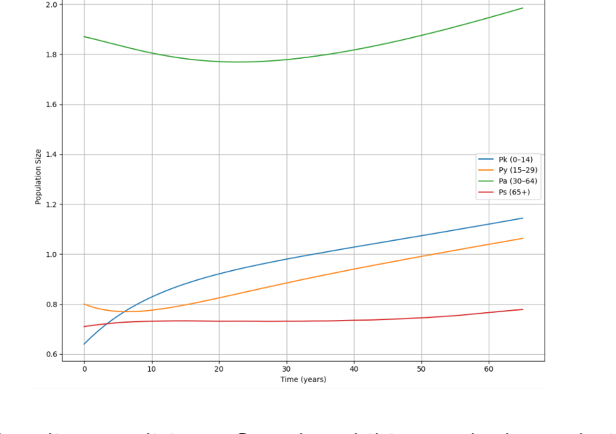
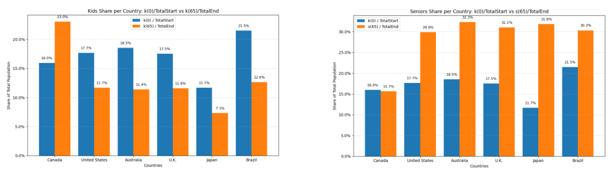
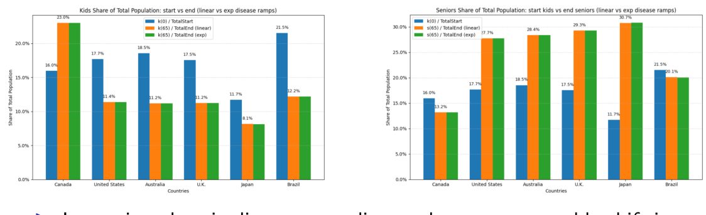

Overview
For my MSc thesis at the University of Guelph, I built an age-structured mathematical model to explore how environmental pressures and unexpected events could affect long-term population dynamics. The study tracks four age groups across Canada, the United States, Australia, the United Kingdom, Japan, and Brazil over a 65-year horizon.
The goal was to compare how demographic structure, food-related and air-related mortality, droughts, and major disease shocks may influence different populations—not to model person-to-person disease transmission.
The modelling approach
I used a system of four coupled differential equations to track children (0–14), youth (15–29), adults (30–64), and seniors (65+). The model incorporates births, aging, and age-specific mortality, with country-level parameters informed by demographic and health data.
Chronic factors such as food-related disease burden and air quality affect mortality over time, while randomly triggered drought and disease events temporarily alter mortality parameters. I compared baseline dynamics with scenarios involving changing birth and death rates, elevated chronic disease burden, and more frequent environmental shocks.

Results & insights
Population outcomes were highly sensitive to the starting demographic structure. The study found that countries with older populations responded differently to the same set of modelled environmental pressures; allowing birth and death rates to vary over time reinforced aging trends.

In the alternative simulations, greater chronic mortality burden slowed population growth, and more frequent shocks increased variability in long-term outcomes. These are scenario-based model findings, not measured forecasts of what will happen in each country.

Research judgement & limitations
The model was designed for interpretable, cross-country scenario testing rather than precise individual-level prediction. Simplifications include uniform risks within each age group, estimated health parameters, and the exclusion of migration and socioeconomic inequality. Stronger datasets and finer demographic detail are natural directions for future work.
Read the research
Access the complete written thesis or the accompanying defence presentation.
Formal thesis title: Modeling Expected Health of Different Ages Around the World in Relation to Environmental Factors. University of Guelph, 2026. Advisor: Dr. Monica Cojocaru.